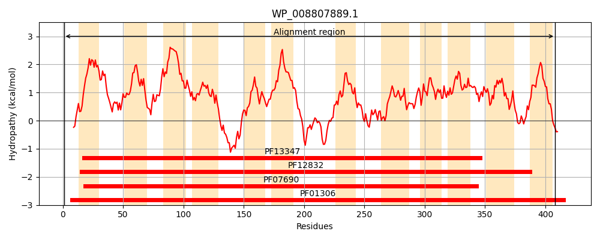
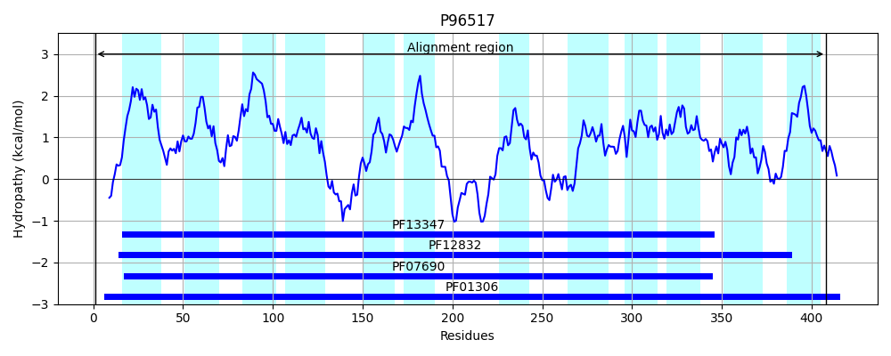
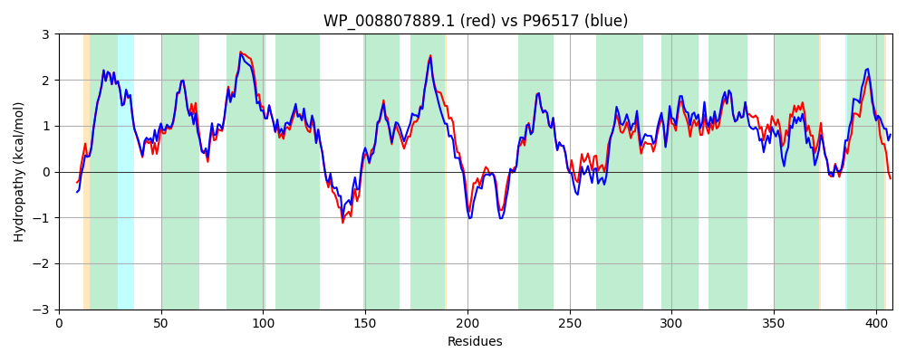

Hit Accession: P96517
Hit TCID: 2.A.1.5.4
Hit Description: gnl|BL_ORD_ID|11745 gnl|TC-DB|P96517|2.A.1.5.4 MelY - Enterobacter cloacae.
Mach Len: 408
e:0.000000
Query TMS Count : 12
Hit TMS Count: 12
TMS-Overlap Score: 11.900000
Predicted Substrates:CHEBI:5584;hydron, CHEBI:6733;melibiose, CHEBI:6353;alpha-lactose
BLAST Alignment:
Score: 1791 , Bit scores: 694 bits, E-value: 0.0e+00, Alignment length: 408, Percentage identity: 82
Query: 1 MNPTVCTHKNNPNFWIFGLFFFLYFFIMATCFPFLPIWLSDVIGLNKTETGLVFSSLSLFAICFQPVLGVISDKLGLKKHLMWIVTVLLVLIAPFFLYVFAPLLKTNIWLGALSGGAYIGFVFSAGAGAMEAYIERVSRNSGFEYGKARTFGCLGWALCATTAGMLFSINPEWVFWMGSAAALLLVVLVAIAKPQASQSAQVMDSLGANRPAIDLKTAVRMFRQRKMWMFILYVIGVACVYDVFDQQFATFFKSFFATPEAGTRAFGFATTAGEICNAIIMFSSPWIINRIGAKNTLLIAGMVMAARMIGSSFATTAAEVVALKMLHALEVPFLLVGAFKYITGVFDVRLSATIYLVGFQFAKQVAAIFLSAFAGNMYDRIGFQDTYMILGGIALTVTLISAFTLAGK 408
MN T CTHK+NPNFWIFGLFFFLYFFIMATCFPFLPIWLSD+IGLNKT TG+VFS +SL AI FQPVLGVISDKLGLKKHL+WI++VLL L APFFLYVFAPLLKTNIWLGALSGG YIGFVFSAG+GA+EAYIERVSRNS FEYGKAR FGCLGW LCA+T G+LF I+P +VFWMGSAAALLL++L+ +AKP+ +Q+AQVM++LGAN+P I K +FRQR+MWMFILYVIGVACVYDVFDQQFATFFK+FFATP+ GTRAFGFATTAGEICNAIIMF SPWIINRIGAKNTLLIAG++MA R+IGSSFATTA EV+ALKMLHALEVPFLLVGAFKYITGVFD RLSATIYL+GFQFAKQ AAIFLSAFAGNMYDRIGFQ+TY++LG L +T++SAFTL+ +
Sbjct: 1 MNTTTCTHKDNPNFWIFGLFFFLYFFIMATCFPFLPIWLSDIIGLNKTHTGIVFSCISLSAIAFQPVLGVISDKLGLKKHLLWIISVLLFLFAPFFLYVFAPLLKTNIWLGALSGGLYIGFVFSAGSGAIEAYIERVSRNSAFEYGKARMFGCLGWGLCASTGGILFGIDPSYVFWMGSAAALLLMLLLVVAKPKPNQTAQVMNALGANQPQITAKKVFNLFRQRRMWMFILYVIGVACVYDVFDQQFATFFKTFFATPQEGTRAFGFATTAGEICNAIIMFCSPWIINRIGAKNTLLIAGLIMATRIIGSSFATTAVEVIALKMLHALEVPFLLVGAFKYITGVFDTRLSATIYLIGFQFAKQSAAIFLSAFAGNMYDRIGFQETYLMLGCFVLAITVVSAFTLSSR 408 | Protein Hydropathy Plots: |
|---|
|  |  |
Pairwise Alignment-Hydropathy Plot:
|
|---|
|  |